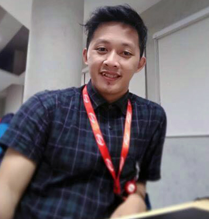
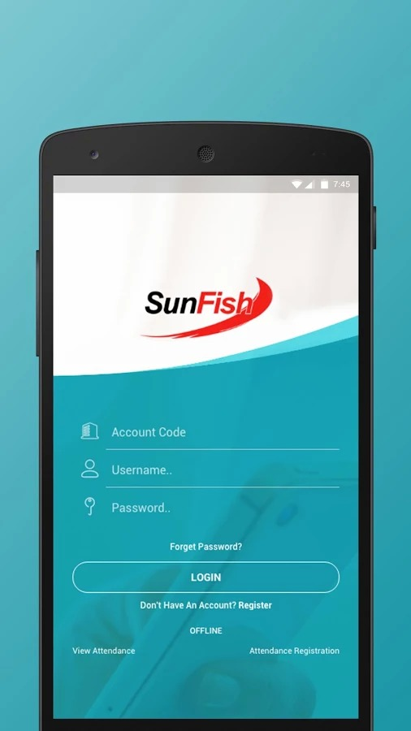
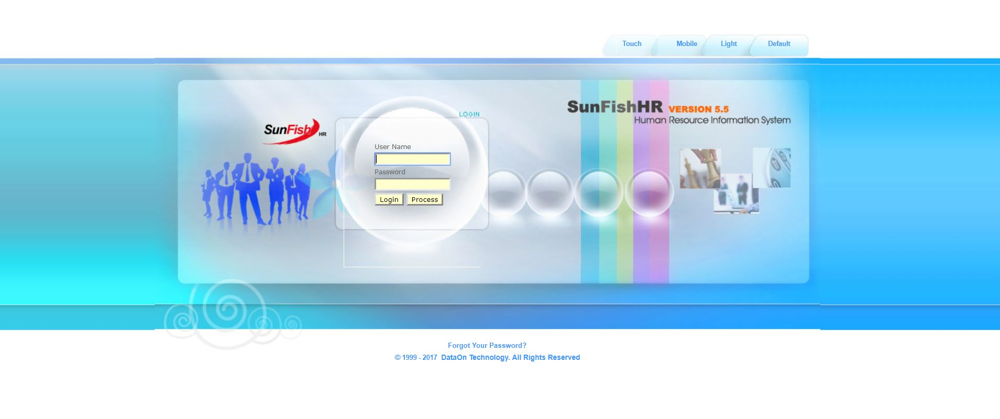
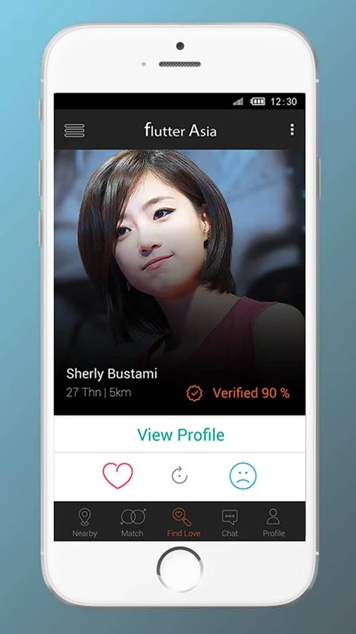
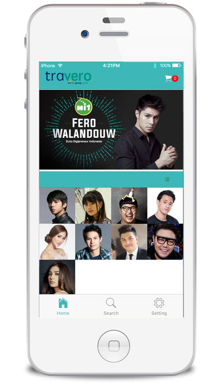
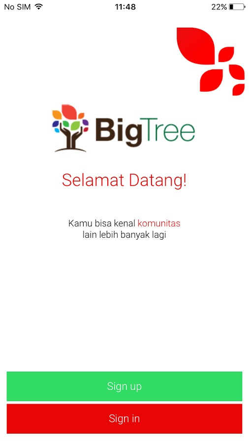
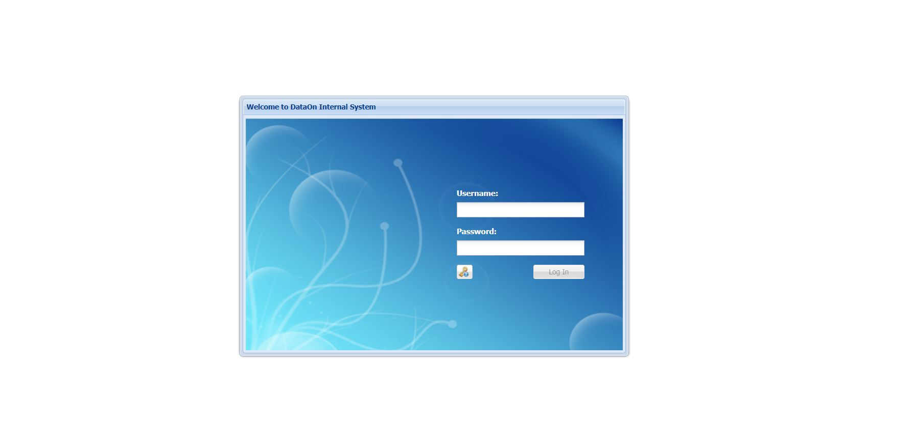
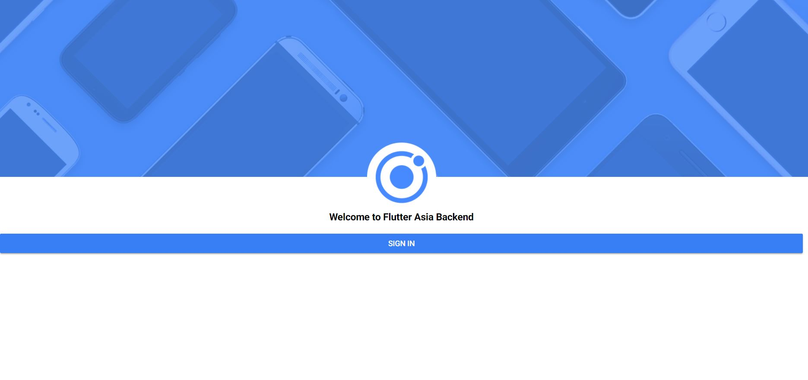
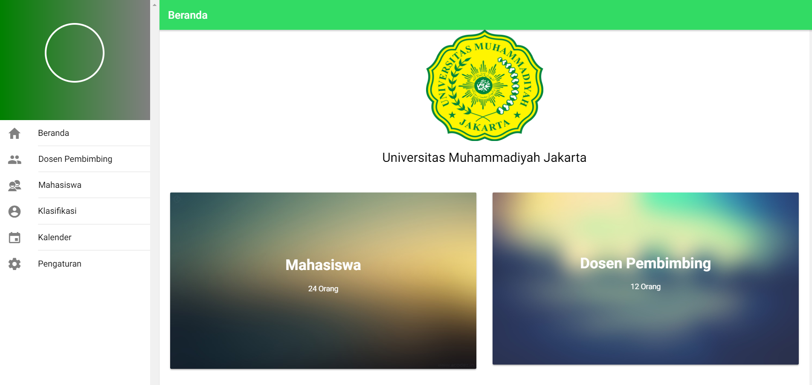

Build for people
Start from the user and the real workflow, not from technology alone.
I'm Jeje Abdul Rahman, a software engineer with experience across mobile, web, backend systems, databases, and long-term software maintenance.

I enjoy turning real-world problems into software that people can understand, use, and maintain.
My background spans hybrid mobile development, front-end and back-end web development, databases, and software maintenance. I studied Computer Science at Muhammadiyah University Jakarta and started working on production software in 2013.
I value continuous learning, clear problem solving, and engineering decisions that make systems easier to evolve over time.
Start from the user and the real workflow, not from technology alone.
Readable code, sensible architecture, and predictable behavior are features.
Deliver useful increments, observe what works, and make the next version better.
Responsive interfaces and web applications with practical, maintainable front-end architecture.
Business logic, integrations, server-side applications, and data-driven services.
Hybrid mobile applications designed around efficient workflows and cross-platform delivery.
Database-backed systems, troubleshooting, continuous improvement, and long-term application support.

Human Resource Management in a mobile-first experience.

Enterprise HR management platform.

Mobile social discovery experience.

Marketplace experience designed for mobile.

Community management in one mobile app.

One platform for everyday company operations.
Help-desk workflows for support operations.

Back-office tools for mobile product operations.

Supervisor assignment assisted by classification logic.
From software maintenance to web and hybrid mobile development.
The original portfolio records continuous professional software development experience beginning in 2013, including roles at PT Indodev Niaga Internet.
PT Indodev Niaga Internet
Built and maintained mobile experiences connected to business systems and APIs.
PT Indodev Niaga Internet
Worked across web applications, backend logic, databases, troubleshooting, and ongoing product maintenance.
Continuous evolution
Focused on building robust software, improving engineering workflows, and learning better ways to deliver reliable products.
I'm always interested in thoughtful software, useful systems, and good engineering conversations.
jejeabdulrahman@gmail.com ↗~ whoami
Jeje Abdul Rahman
~ role
Software Engineer
~ location
Indonesia
~ contact --email
jejeabdulrahman@gmail.com_